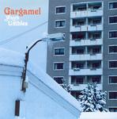

Home Artist links Label link

Gargamel - Watch For The Umbles
| Artist: | Gargamel |
| Title: | Watch For The Umbles |
| Label: | Transubstans trans020 |
| Length(s): | 58 minutes |
| Year(s) of release: | 2005 |
| Month of review: | [04/2006] |
Line up
Tom Uglebakken - guitar, vocals, flute, sax
Bjorn Viggo Andersen - keys
Morten Tornes - drums, vocals, glockenspiel
Jon Edmund Hansen - guitar
Geir Tornes - bass
Leif Erlend Hjelmen - cello
Tracks
| 1) | Ties | 8.47
|
| 2) | Strayed Again | 12.54
|
| 3) | Below The Water | 6.44
|
| 4) | Into The Cold | 11.54
|
| 5) | Agitated Mind | 17.42
|
Summary
The music
Opener Tics is an instrumental that despite its length manages quite well in maintaining the tension. The combination of bass, guitar and keyboards manages to slowly increases the tension, building towards a maximum. Having said that, the vocals of Strayed Again easily convince of their added value. The emotion and fervour of this track add something, drawing the sound, heavy with organ, pushed by bass and bluesy guitar riffs in the direction of a heavy progressive sound that is not so much present on the other tracks. The mid section shows some more funky bits, that do let the tension slip a little. The band pick up strongly after this, though, to bring the track to a great ending.
Below The Water and Into The Cold are less energetic, more melancholic. The added mellotron and cello (BTW) and moog (ITC) compensate for this to a degree. However, not fully so. Especially the vocals in Below The Water take on a whining quality. Into The Cold opens as such, but this quality deminishes -luckily- as the track progresses. The mid section interval has a melodic development that reminds me of an Anekdoten track off their debut a lot.
The closing epic Agitated Mind picks up on tension a bit from its two predecessors by bringing in some tension laden sections. It also features some slower bits, though, thus creating what might be seen as an integration of the two sounds of the previous tracks. Apart from that it has some sort of ditty as a break. This sounds odd, but fits the track quite well.
Conclusion
I would compare Gargamel to Swedish retro progbands like Circus or maybe even some Anglagard. Drahk Von Trip isn't that far off either. Unfortunately several sections fall somewhat short in building tension. Of course, that could be me, but the other sections show that the band can do better. Thus I would say this is a good album, but that it also makes clear that a next album could be better. Despite that this album is a proposition that those into the Swedish melancholic prog sound should consider seriously.
© Roberto Lambooy